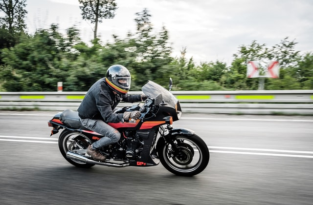

Type of Motorcycles
Lots of types, lots of riding styles, same passion.
The thrilling feeling of just us, our bike and the road is what makes us love our bikes so much. You want to feel that too and become part of the vast world of motorcycling? One of the first things to determine is what kind of bike you want to ride. If you already know, feel free to skip this, but if you are unsure, here are the types of motorcycles to choose from.
Tip: Every type of motorcycle has it's own pros and cons, so never completely cross out a certain type. First decide what mostly are you going to use it and where you will regularly ride, as this will narrow down your options.
If you are just getting into motorcycling, maybe you will be a little confused with all the models out there. No need to worry, we have all been there. Here is a list of the most common motorcycle types and their advantages and/or disadvantages, to help you take the right decision for youself!
Sportbike
Sportbikes are the most wanted type, combining high-powered engines, high-performance brakes and an aggresive look.
While they may be commonly seen on the streets, Sportsbikes must never be underestimated, due to their fast acceleration and often untamable behaviour. New riders who find Streetbikes as their only option, should go for the 250cc or 400cc models, as they may forgive most of your rookie mistakes on two wheels. If you are an adventurous guy, casually riding everywhere you go, there are better options, as these bikes are known to be uncomfortable for long rides.
Pros:
- Fast acceleration, lots of power and high-performance brakes.
- An aggresive, mindblowing look.
- Loud sound (could help when city riding)
Cons:
- Uncomfortable riding position
- Hard to maneuvre in tiny spaces
- Loud sound (could be bad for your head when on a longer distance ride)
Cruiser
The name speaks for itself.
Would you enjoy cruising around and take the pure fulfillment of driving? Well, a cruiser may be your best choice! They are big, comfortable and making heads turn. Usually with fat rear tires and a big engine displacement.If you are an unique and artistic-oriented person this may be the perfect fit for you. Cruisers tend to be the most customised motorycle type and are all authentic as possible.
Pros:
- Fast acceleration, lots of power and high-performance brakes.
- An aggresive, mindblowing look.
- Loud sound (could help when city riding)
Cons:
- Uncomfortable riding position
- Hard to maneuvre in tiny spaces
- Loud sound (could be bad for your head when on a longer distance ride)